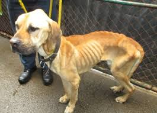
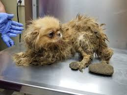
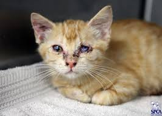
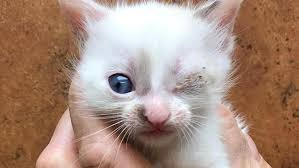
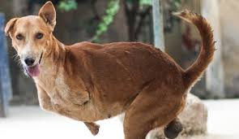
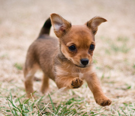

Mission Statement
The ASPCA mission statement is "To provide effective means for the prevention of cruelty to animals throughout the United States." The ASPCA stands for The American Society for the Prevention of Cruelty to Animals. The ASPCA maintains a strong local presence, and with programs that extend our anti-cruelty mission across the country.The ASPCA works every day to save animals' lives, and we could not do it without your generosity. Each contribution to the ASPCA means aid for homeless, neglected and abused animals all over the United States. Your continued support as a Founder's Society member truly makes a difference.
Animal Cruelty
As you are reading this sentence innocent animals all over the world are being abused, neglected, or forced to defend and fend for themselves. The ASPCA is taking the first step to create a postive change for these animals by acknowledging and recongnizing the cruelty that threatens them. Animal Cruelty is a wide range of abuse from dogfighting, animal hoarding,the puppy industry,farm animal welfare,horse slaughter, and more.
     Innocent Death
one out of ten dogs borns will find a permanent home.Every year 7.6 milliondogs and cats are admitted to an animal shelter. However; 2.7 millio dogs and cats are then killed because there isn't enough space for all of these neglected animals. Homeless animals out number homeless people five to one. Although, many strays are lost pets that were not properly kept indoors or provided with an identification. To prevent strays, overpopulation, and eventually death for animals all it takes is for us to keep a close eye out for ay animal that may be lost.